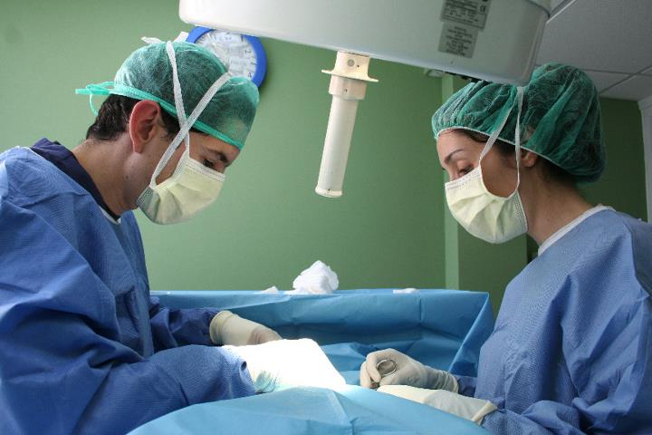

Para monitorearlo, contamos con aparatos de anestesia inhalatoria, monitor cardíaco, oxímetro, control de temperatura ambiente, aparato de control de presión arterial, bomba de infusión de fluidos, bisturí eléctrico, además de rígidas normas de esterilización, asepsia y antisepsia
